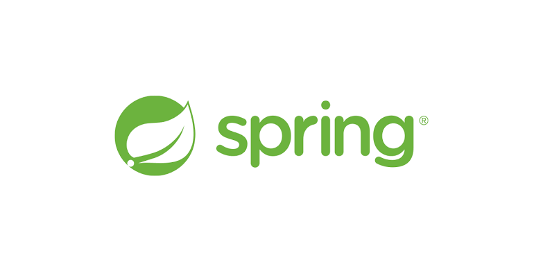

Django

Django adalah sebuah kerangka kerja full-stack untuk membuat aplikasi web dengan bahasa pemrograman
python. Django juga merupakan kerangka kerja python web tingkat tinggi yang dapat melakukan
pengembangan aplikasi dengan cepat dan memiliki desain pragmatis yang bersih. Django dapat membuat
pengembangan aplikasi menjadi lebih mudah, lebih cepat dan lebih sedikit menggunakan kode.
Django dibuat pada tahun 2003 oleh Simon Wilison dan Adrian Holovaty. Nama Django sendiri diambil
dari nama seorang gitaris kebangsaan Belgia dan Perancis yaitu, Django Reinhardt. Django dirilis
versi pertama pada September 2008. Pada tahun 2021, Django sudah mencapai versi 3.
GETTING STARTED
ExpressJS
Express JS adalah framework dari NodeJS yang dirancang secara fleksibel dan sederhana untuk membantu
tahap pengembangan aplikasi back end. Express JS juga sangat berbeda dengan framework Laravel,
dimana library ini memberikan kebebasan bagi para developer untuk mendesain aplikasi, sehingga
memungkinan bagi setiap pengembang memiliki rancangan arsitektur yang berbeda dalam software yang
dibangun.
GETTING STARTED
Laravel

Laravel adalah salah satu Framework PHP yang paling populer dan paling banyak digunakan di seluruh
dunia dalam membangun aplikasi web mulai dari proyek kecil hingga besar. Framework ini banyak
digunakan oleh Web Developer karena kinerja, fitur, dan skalabilitas nya. Framework ini mengikuti
struktur MVC (Model View Controller), MVC adalah sebuah metode aplikasi dengan memisahkan data dari
tampilan berdasarkan komponen-komponen aplikasi, seperti: manipulasi data, controller, dan user
interface.
Dengan menggunakan struktur MVC maka membuat laravel mudah untuk dipelajari dan mempercepat proses
pembuatan prototipe aplikasi web. Framework ini juga menyediakan fitur bawaan seperti otentikasi,
mail, perutean, sesi, dan daftar berjalan.
GETTING STARTED
Spring

Framework spring adalah framework open source berbasis java yang menyediakan infrastruktur yang
komprehensif dalam mengembangkan aplikasi java dengan mudah dan cepat. Spring pertama kali ditulis
dan dirilis oleh Rod Johnson dengan lisensi Apache 2.0 pada bulan Juni 2003. Spring akan membantu
programmer dalam pengembangan aplikasi dengan build yang sederhana, portable, cepat dan sistem
berbasis JVM yang fleksibel. Spring dapat digunakan untuk melakukan pengaturan deklarasi manajemen
transaksi, remote access dengan menggunakan RMI atau layanan web lainnya, fasilitas mailing, dan
beragam opsi untuk pengaturan data ke database. Spring juga memungkinkan kita menggunakan hanya
modul-modul tertentu sehingga kita tidak perlu menggunakan semua modul spring dalam aplikasi apabila
tidak diperlukan.
GETTING STARTED
Ruby on Rails
Ruby on Rails, disebut juga Rails, adalah sebuah kerangka kerja aplikasi web sumber terbuka yang
berjalan via bahasa pemrograman Ruby. Ia merupakan kerangka kerja full-stack: memampukan pembuatan
laman dan aplikasi yang mengumpulkan informasi dari server web, berkomunikasi dengan atau memanggil
sebuah kueri dari server web, dan mengolah templat dari sumber. Sebagai hasilnya, Rails menyajikan
fitur sistem routing yang independen dari server web.
GETTING STARTED